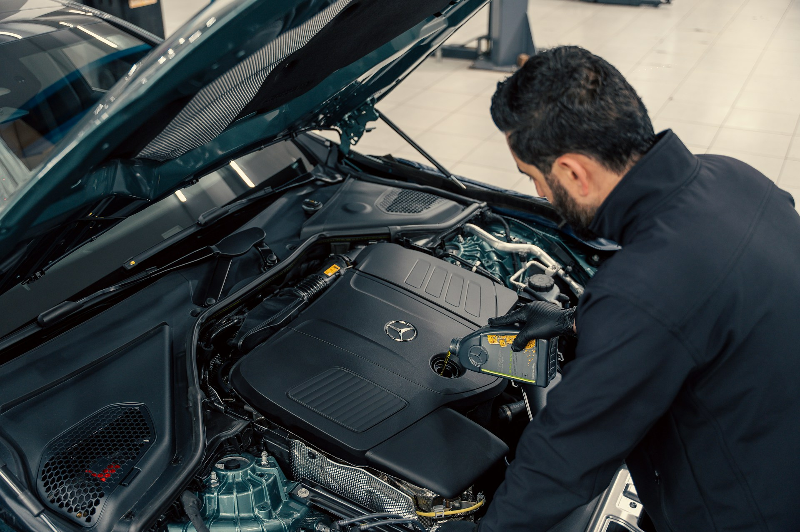
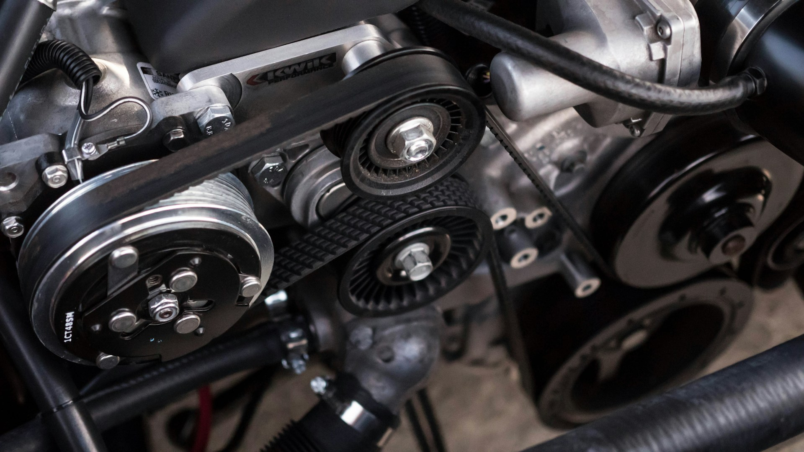

What is Auto Repair?
Auto repair is the process of inspecting, maintaining, and fixing vehicles to keep them running safely and efficiently. It includes services such as oil changes, brake repairs, tire replacements, and engine diagnostics. Auto repair technicians use specialized tools and equipment to identify mechanical and electrical problems in vehicles. Regular auto repair and maintenance help prevent breakdowns and extend the life of a car. Repair shops may work on cars, trucks, SUVs, and other types of motor vehicles. Auto repair is important because it helps ensure vehicle safety, performance, and reliability.

How to get started.
Getting started in auto repair begins with learning the basics of how vehicles work, including engines, brakes, and electrical systems. Many people start by taking automotive classes in high school, college, or technical schools. Reading repair manuals and watching instructional videos can help you build your knowledge. Hands-on practice, such as changing oil, replacing filters, or rotating tires, is a great way to gain experience. Working alongside an experienced mechanic can teach you valuable skills and safety procedures. Investing in a basic set of tools will help you perform common repairs and maintenance tasks. With dedication and continued learning, you can develop the skills needed for a successful career in auto repair.
